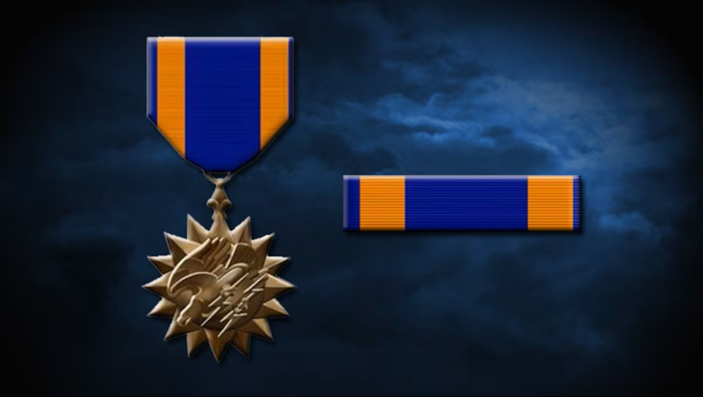

Chapter 1: The Aviator
This Zippo serves as a physical record of Warrant Officer Arthur P. Lancy Jr.'s service during the pivotal 1965 training cycle at Fort Wolters, the "Helicopter Capital of the World."
Chapter 2: The Training Horse
Lancy mastered the Hughes TH-55A Osage, a primary trainer that shaped the backbone of Army Aviation during the Vietnam era.

Chapter 3: The Presentation Lighter

Exquisitely preserved, the front face proudly displays the "Class 65-9WA" designation alongside the iconic Hughes "World Leader" insignia.
Chapter 4: Exceptional Preservation

The side profile confirms the brushed chrome finish remains sharp, with every engraving legible after nearly six decades of history.
TECHNICAL SPECIFICATIONS
- Provenance: WO Arthur P. Lancy Jr.
- Era: Vietnam War (1965)
- Unit: Class 65-9WA
- Location: Fort Wolters, Texas